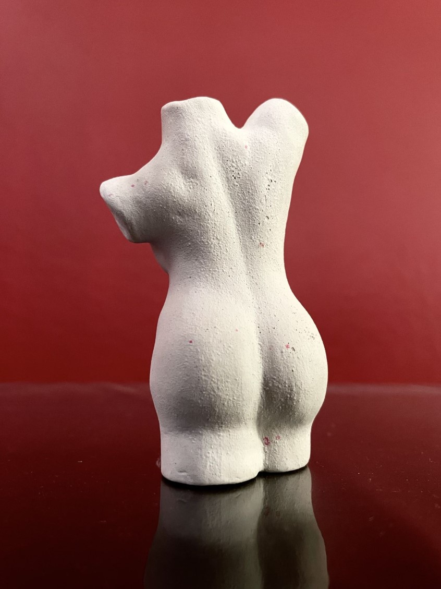
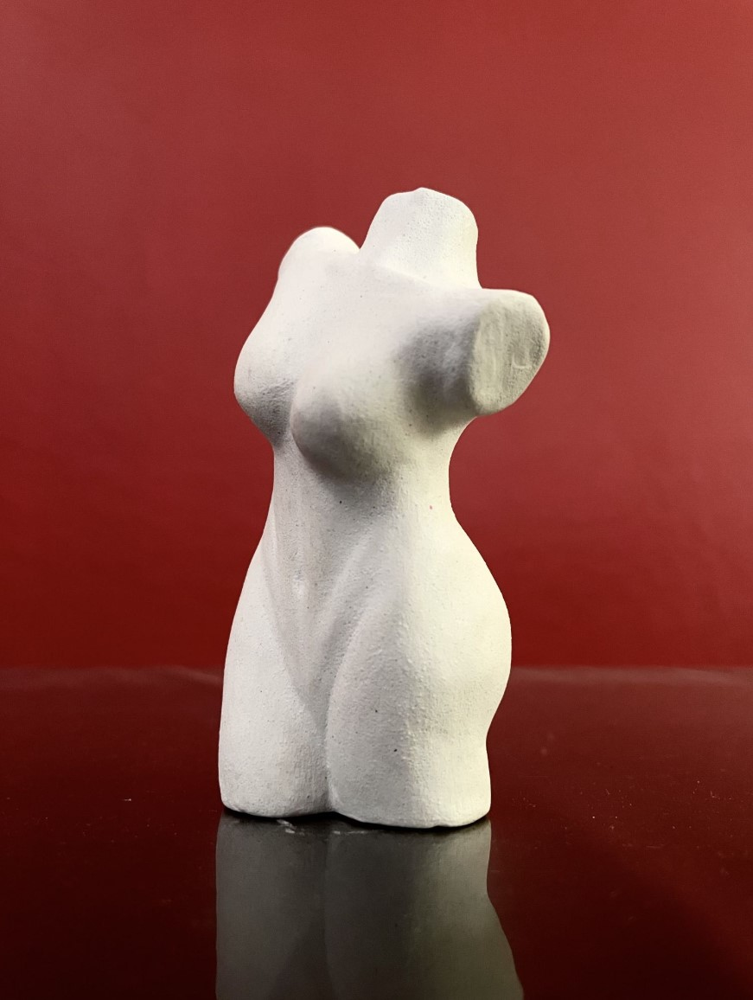

Feminine
- Medium
- ceramics
This sculpture depicts a woman’s muscular torso as it twists slightly to resist the stereotypical feminine body image. The female body isn’t usually represented as strong and independent; this conflicts with our societal norms. I deliberately added a more muscular and realistic shape achievable through hard work, rather than genetic traits outside of one’s control.


